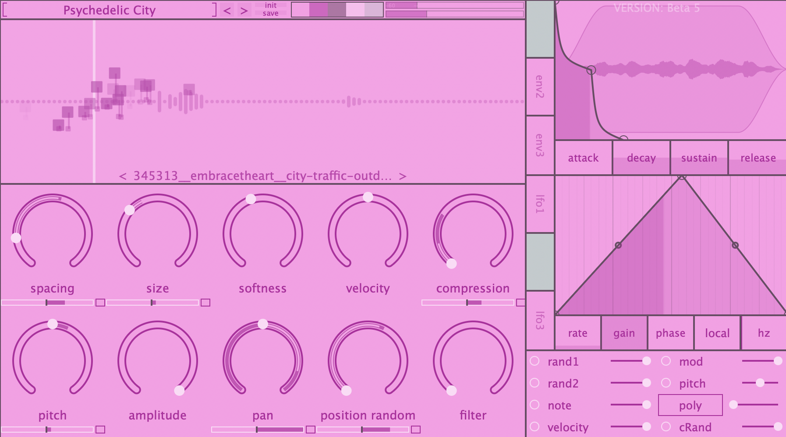
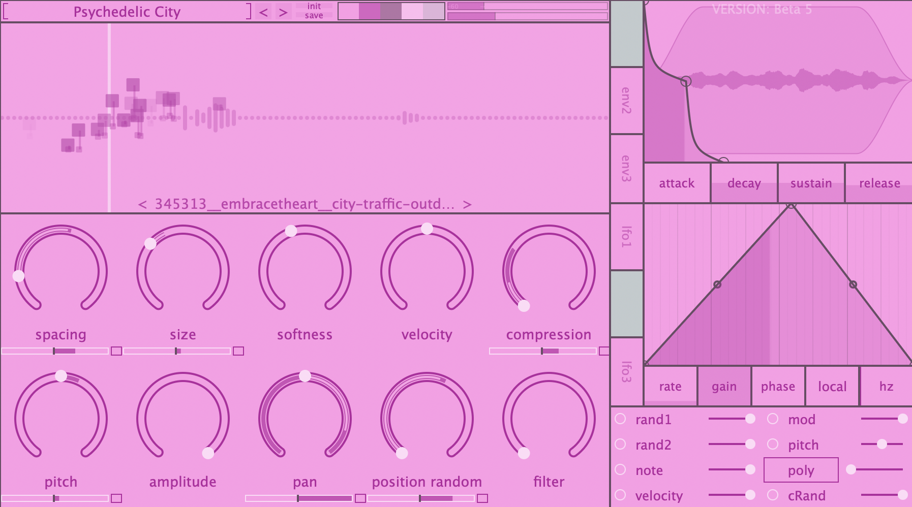

Grainferno
a unique approach to granular sound design
a unique approach to granular sound design
A method of synthesis which break ups existing sounds (ex. your own samples) into small chunks caled "grains". These grains are repitched, repanned, and rearranged to create entirely new sounds.
Grainferno offers a completely novel approach to granular synthesis: "tonal" granular synthesis. Create arbitrarily small grains, with grain rates implicitly linked to the note being played. So, with grainferno, you create traditional granular sounds, and physical modelling-esque tones, and anything in between. difficult to explain, easy to hear.
Easily link any knob to a modulation via drag and drop, adjust modulation amounts, and manage and remove modulations, all from the main gui. Modulation sources include: 3 evelopes, 3 drawable lfos, 3 randomness controls, and many more